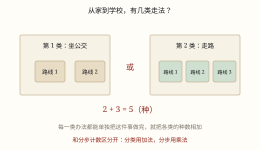

加法原理与分类计数
做完一件事有几种办法？如果这些办法能分成互不重叠的几类，而每一类单独就能把事做完，那么总办法数就是把各类的办法数加起来。
| 所属主题 | 计数方法 |
|---|---|
| 所属模块 | 数学思考 |
| 课标学段 | 第三学段（5~6年级） |
| 前置知识 | 加法的认识与 5 以内加法 |
| 核心素养 | 推理意识模型意识应用意识 |
课标要求
| 数与代数·数量关系 | 能解决生活中的简单问题，并能对结果的实际意义作出解释，经历探索简单规律的过程（例14），形成初步的模型意识和应用意识。 印刷第 21 页 行为动词：运用 |
|---|
说明
有些问题的答案不是算出来的，是数出来的：出门有几条路线、食堂有几种选法、密码有几种可能。数的时候最怕数乱，加法原理就是给「数」定一条规矩。
把完成一件事的所有做法分成几类。如果 每一类里随便一种做法，都能单独把这件事做完，而且 同一种做法只属于一类、不会重复出现，那么总做法数 = 第一类的做法数 + 第二类的做法数 + …。这个「加起来」不是巧合，它做的就是「把几堆东西并成一堆，再挨个数完」。
最小的例子：从家到学校，能坐 3 条公交线路，也能坐 2 条地铁线路，坐哪一趟都能到。选公交有 3 种，选地铁有 2 种，一共 3+2=5 种。注意这里全程只选一次车，不存在「先坐公交再换地铁」。
要盯住两个条件：类类独立，每一类都能把事做完；不重不漏，每种做法恰好被算一次。只要有一条不满足，加法就会多算或少算。
分类的办法不止一种。同一种笔，可以按牌子分（三个牌子），也可以按颜色分（红、蓝、黑），还可以按笔芯粗细分。用哪种分法都行，只要坚持用同一种，数出来的总数就应该一样——如果两次数的结果不同，说明某一次分错了。
使用场景
出行选路线：从家到图书馆，能坐的公交有 3 条线、能坐的地铁有 2 条线，任选一种，就是 3+2 种走法。
食堂选一份主食：米饭 2 种、面条 3 种、包子 4 种，只挑一份，把三类的种类数加起来就是答案。
图书馆借一本书：故事类 8 本、科普类 6 本、漫画 5 本，只借一本，8+6+5 种挑法。
班级选一名组长：从 5 名男生里选，或者从 6 名女生里选，5+6 种。
买文具：同一种笔有 3 个牌子、同一种本子有 4 个牌子，只买其中一样，3+4 种。
取快递：快递站有 3 个人工窗口和 2 台自助取件机，只排一次队，3+2 种排法。
注意点
先定分类标准，再动笔数。同一批东西不能一会儿按颜色分、一会儿按款式分，否则有的被算两次、有的被漏掉。
每一类都要能独立交差。如果「选上衣」之后还得再选裤子，它就不是一类做法，不能放进加法里。
类与类不能重叠。按「会游泳的」和「会骑自行车的」分人时，两样都会的人会被算两遍。
看清是「或」还是「且」。「或者坐公交，或者坐地铁」用加；「先坐公交，再换地铁」用乘。
答案要能被说清楚。检查的办法是：随便报出一种做法，问自己它属于哪一类，能不能在那一类里找到它。找得到、且只找到一次，分类才算合格。

图 1：分类用加法，分步才用乘法
为什么是这样
算理推导
先把「完成这件事」理解成「从所有做法里挑出一种」。挑完就结束了，不需要再做别的。
既然每一类都能单独把事做完，那么选了第一类里的做法，就不必再考虑第二类；各类之间是 并排 关系，谁也不依赖谁。
并排的几堆东西数总数，就是把它们倒进同一个筐里挨个数。3 种公交加 2 种地铁，筐里有 5 个做法，一个是 3、一个是 2，加起来正好 5。
反过来看：如果两类有重叠，重叠的做法在筐里就出现两次，数出来会比真实的多。所以分类必须不重不漏；万一漏不掉，就要把重复的那部分减掉。
加法原理之所以叫「原理」不叫「公式」，是因为它管的不是数字，而是「怎么分堆」这件事。分对了，加法自然成立。
动手实验
准备 3 张红色卡片、2 张蓝色卡片、2 张黄色卡片，分别当作三种颜色的裤子款式。让同桌说「我要一条蓝裤子」，你只能从蓝色那一堆里拿——这说明每一类自己就能满足要求。再把三堆摊开数一遍，是 7 张；用 3+2+2 算一遍，也是 7。最后故意把同一张卡片同时放进两堆，重数一次，看总数是不是变多了。
按场景的例题
例 1（场景：行程出行） 从家到少年宫
从家到少年宫，可以坐 3 条不同的公交线路，也可以坐 2 条不同的地铁线路。只坐一趟车，一共有多少种走法？
解：坐公交 3 种，坐地铁 2 种，两类都能单独到达，3+2=5。
答：5 种走法。
例 2（场景：饮食与配比） 食堂只选一份主食
食堂的主食有米饭 2 种、面条 3 种、包子 4 种。只选一份主食，有多少种选法？
解：三类都只选一样就够了，2+3+4=9。
答：9 种。
例 3（场景：上学日常） 图书馆借一本书
图书馆的故事书有 8 本、科普书有 6 本、漫画有 5 本。只借一本，有多少种挑法？
解：借哪一类都算完成任务，8+6+5=19。
答：19 种。
例 4（场景：校园生活） 选一名值日组长
班里 5 名男生、6 名女生都愿意当值日组长，只选 1 人，有多少种选法？
解：从男生里选 5 种，从女生里选 6 种，5+6=11。
答：11 种。
常用推论
把一件事分成 n 类，各类做法数分别是 a_1,a_2,\dots,a_n，总数就是 a_1+a_2+\dots+a_n。
如果两类之间有 k 种做法重复，总数 = 两类之和 - k。
题目里出现「或者」「要么…要么…」「任选一种」时，先想分类相加。
每一类内部如果还要分几步做，就先在类里用乘法，再把各类的结果加起来。
分类的办法换了，总数不会变。如果换个分法数出来的结果不同，说明其中一次分类有重叠或者有遗漏。
遇到「至少」「至多」的问法，先按结果的表现分几类，再逐类去数。
易错点
错3 件上衣、4 条裤子，一共 3+4=7 种穿法。
为什么错选一件上衣并没有把「穿好一套」这件事做完，还得配一条裤子。这是分两步，不是分两类。
正确分步用乘法：3×4=12 种。
错统计班里「会游泳的」和「会骑自行车的」人数，直接把两个人数相加，当作「至少会一样」的人数。
为什么错两样都会的同学被算进了两类，重复数了一次。
正确两个人数相加后减去「两样都会」的人数，才是至少会一样的人数。
错把同学先按「戴眼镜」分一类，再按「男生」分一类，然后把两类人数相加。
为什么错戴眼镜的男生同时属于两类，两把尺子交叉着分，重复很多。
正确一次只用一把尺子分：要么按是否戴眼镜分，要么按性别分。
直观理解
加法原理像一排并排的门：推开任意一扇，你就出去了，所以门的总数就是把每扇门挨个数一遍再加起来。它只管「有几条路可走」，不管路上有几道坎。
分类数数用加法，类类独立不分家；你走这门我走那，条条大路都到达。